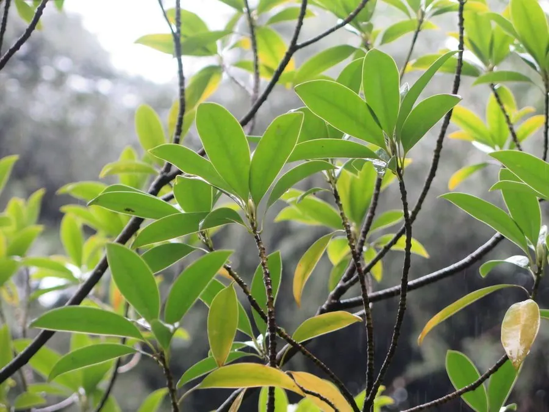

乔木 · 植物界
乐东拟单性木兰 Parakmeria lotungensis

木兰科拟单性木兰属常绿乔木，花单性、白色芳香，树干通直、材质优良，是中国南方珍稀的用材与园林树种。
- 分类
- 门被子植物门纲木兰纲目木兰目科木兰科属拟单性木兰属
- 栖息环境
- 海拔 300–1200 米的山地常绿阔叶林，喜温暖湿润、土壤肥沃
- 地理分布
- 中国海南、广东、广西、福建、江西、湖南、贵州等地
- 保护级别
- 中国国家二级保护野生植物；天然林采伐使野生资源减少
物种志
乐东拟单性木兰为常绿乔木，高可达 30 米，树皮灰白色，小枝具托叶痕。叶片革质，倒卵状椭圆形，长 8–15 厘米。花单性，雌雄异株，白色至淡黄色、芳香，花被片 9 枚；聚合果卵状圆柱形，长 5–8 厘米，成熟时开裂露出红色种子。
本种为中国特有种，分布于海南、广东、广西、福建、江西、湖南、贵州等地，生于海拔 300–1200 米的山地常绿阔叶林中，喜温暖湿润、土壤肥沃的环境。它树干通直、材质优良，是珍贵用材树种，木材可供建筑、家具与造船；树形优美，也可作园林树。因天然林采伐与生境破碎化，野生资源减少，被列为国家二级保护野生植物。
形态与习性
- 株高可达 30 米，树干通直
- 花期4–5 月，花白色至淡黄、芳香
- 果期10 月，聚合果开裂露红种
- 光照幼树耐阴，成树喜光
- 水分喜湿润，适宜年降水量 1400 mm 以上
- 土壤深厚肥沃的酸性红壤
- 主要用途珍贵用材、园林观赏与种质保护
趣味知识
- 乐东拟单性木兰的模式产地是海南乐东，因此得名。
- 它的花单性、雌雄异株，与同属的峨眉拟单性木兰一样，是木兰科中的特殊类型。
- 木材结构细、耐腐，是海南与华南地区传统的珍贵用材。
- 野生大树因采伐而减少，现被列为国家二级保护野生植物。